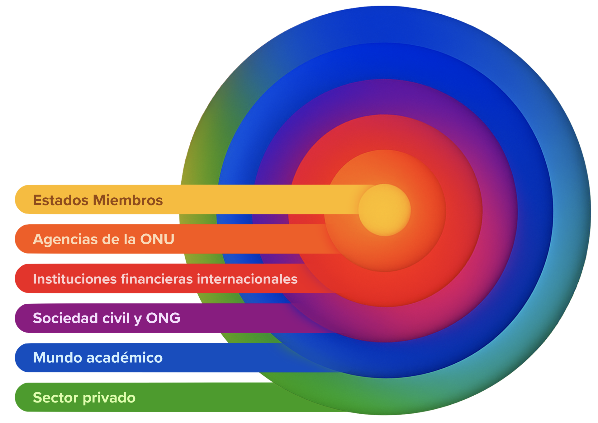

Español
Español

Alianzas para el progreso
Ecosistema de
alianzas

Las relaciones de larga data del PNUD con sus asociados gubernamentales siguen siendo fundamentales en la obtención de resultados. Los Gobiernos proporcionan los recursos que el PNUD necesita para ejecutar sus programas de los países, coordinados con los equipos de las Naciones Unidas en los países y adaptados al contexto local.
El sector privado es un asociado indispensable para lograr la transformación sistémica. El PNUD colabora con el sector privado a fin de ajustar la innovación empresarial, el capital y los conocimientos especializados a las prioridades nacionales de desarrollo.
Amplificamos nuestra incidencia aprovechando la financiación combinada y los bonos vinculados a la sostenibilidad, al tiempo que nos asociamos con las instituciones financieras internacionales (IFI) para proporcionar asistencia técnica y financiación complementarias.
Ampliamos los recursos, los conocimientos especializados y la experiencia de los que disponen nuestros asociados mediante el fomento de la cooperación Sur-Sur y triangular, así como la ayuda a los Gobiernos para aprovechar los diversos recursos de otros organismos de las Naciones Unidas.
Continuamos diversificando nuestras alianzas con organizaciones filantrópicas, el sector privado, las IFI, el mundo académico, la sociedad civil y las organizaciones no gubernamentales (ONG), de modo que contribuimos a implicar a una mayor variedad de partes interesadas en el desarrollo.
El sistema de las Naciones Unidas para el desarrollo
La revisión cuadrienal general de la política relativa a las actividades operacionales del sistema de las Naciones Unidas para el desarrollo, llevada a cabo en 2024, pone de relieve la necesidad de coherencia, eficiencia, eficacia y rendición de cuentas. El PNUD aprovecha sus conocimientos técnicos, sus redes y su presencia mundial para contribuir a estos esfuerzos colectivos.
Bajo el liderazgo de los países, el PNUD alinea sus programas para los países con las prioridades nacionales a partir de los resultados de dichos programas obtenidos de los Marcos de Cooperación de las Naciones Unidas para el Desarrollo Sostenible. En colaboración con los equipos en los países, dirigidos por los coordinadores residentes, ejecutamos programas integrados y con base empírica que abordan cuestiones de desarrollo complejas, aprovechando nuestra experiencia en previsión y pensamiento sistémico.
El PNUD sigue siendo el mayor participante en los fondos mancomunados y programas conjuntos de las Naciones Unidas, con más de 240 millones de dólares en programación conjunta. La complementariedad es crucial. Cultivamos sinergias interinstitucionales en el diseño de políticas, la ejecución de programas y los mecanismos de elaboración de informes para evitar la duplicación y la fragmentación de esfuerzos.
La incidencia del sistema de las Naciones Unidas para el desarrollo se multiplica gracias a los activos alojados por el PNUD, que proporcionan servicios y conocimientos especializados al sistema:

en 2024, 14.631 Voluntarios de las Naciones Unidas (VNU), de 181 nacionalidades, prestaron servicio a 59 entidades de las Naciones Unidas en 169 países.

al integrar las capacidades e instrumentos financieros del Fondo de las Naciones Unidas para el Desarrollo de la Capitalización (FNUDC) en su programación, el PNUD fomenta el crecimiento sostenible, la creación de empleo y las oportunidades económicas para todas las personas.

la Oficina de los Fondos Fiduciarios de Asociados Múltiples (OFFAM) crea un fondo mancomunado, con una dotación superior a 1.000 millones de dólares al año, para obtener resultados más sólidos a gran escala.

la Oficina de las Naciones Unidas para la Cooperación Sur-Sur (UNOSSC) promueve un alto nivel de desarrollo humano mediante el desarrollo y la transferencia de tecnología, la cooperación financiera, el aprendizaje entre iguales y la creación de capacidades, especialmente en innovación digital y de gobernanza.